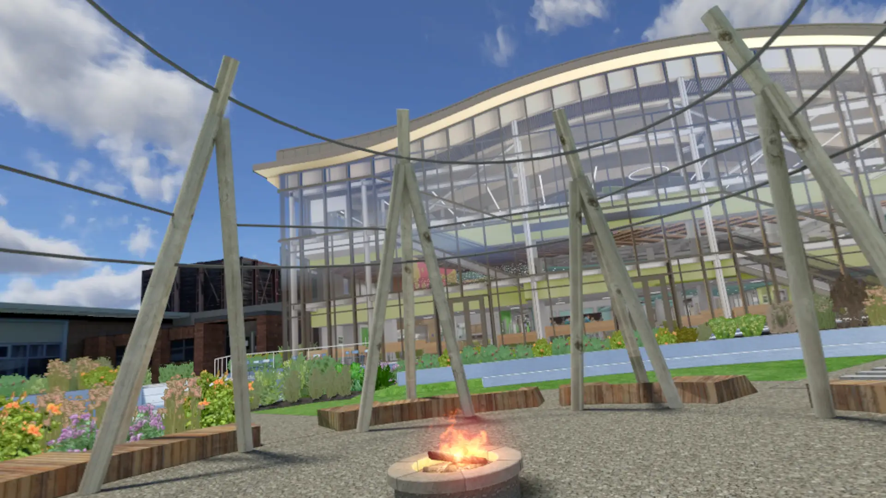

IELC Algonquin Building Project
Help Algonquin College building a virtual tour experience of the IELC building. Where multiple users can join and explores together, there are activities built inside the virtual building as well like games, virtual collaboration space, and many more.
Steampunk Gala Project
Build a VR Museum attraction for the Steampunk Gala event. The project is a replication of the original Canada Aviation and Space Museum but adding steampunk elements to it. User can activate multiple interactive experiences from different aircrafts from shooting a gatling gun, flying a plant, and many more.
Aerospace Campus Project
Help Contruction Research Centre (CRC) to build a virtual tour experience of the Aerospace Campus building. This is a 2 week project where I am the lead developer where I build the whole project from scratch using Unity and C# including UI using the same system from my previous project, movement, and game loop.